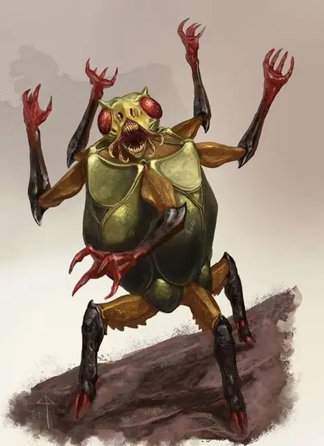

Дерголот
Dhergoloth
Среднее Исчадие (Юголот), нейтрально-злое

Класс Доспеха 15 (природный доспех)
Хиты 119 (14к8 + 56)
Скорость 30 футов
| мод | спас | ||
|---|---|---|---|
| СИЛ | 17 | +3 | +6 |
| ЛОВ | 10 | +0 | +0 |
| ТЕЛ | 19 | +4 | +4 |
| мод | спас | ||
|---|---|---|---|
| ИНТ | 7 | −2 | −2 |
| МДР | 10 | +0 | +0 |
| ХАР | 9 | −1 | −1 |
Сопротивление урону огонь, холод, электричество; дробящий, колющий, рубящий
Иммунитет к урону кислота, яд
Иммунитет к состояниям отравление
Чувства слепое зрение 60 футов, тёмное зрение 60 футов, пассивное Восприятие 10
Языки Бездны, Инфернальный, Телепатия 60 фт.
Опасность 7 (2900 опыта)
Бонус мастерства +3
Среда обитания Подземье
Особенности
Сопротивление. к немагическому дробящему, колющему и рубящему урону.
Врождённое колдовство. Базовой характеристикой дерголота является Харизма (Сл спасброска от заклинания 10). Он может накладывать следующие заклинания, не нуждаясь в материальных компонентах:
• Неограниченно: тьма [darkness], ужас [fear]
• 3/день: усыпление [sleep]
Сопротивление магии. Дерголот совершает с преимуществом спасброски от заклинаний и прочих магических эффектов.
Магическое оружие. Атаки оружием дерголота являются магическими.
Действия
Мультиатака. Дерголот совершает две атаки когтями.
Когти. Рукопашная атака оружием: +6 к попаданию, досягаемость 5 футов, одна цель. Попадание: 12 (2к8 + 3) рубящего урона.
Размахивание когтями (перезарядка 5-6). Дерголот передвигается со своей скоростью по прямо линии и совершает атаку против каждого существа на расстоянии 5 футов от себя, пока он движется. Каждая цель должна преуспеть в спасброске Ловкости Сл 14, иначе получит 22 (3к12 + 3) рубящего урона.
Телепортация. Дерголот магическим образом телепортируется в свободное пространство в пределах 60 футов от себя, которое он может видеть.
Описание
Дерголоты врываются в битву подобно вихрям разрушений, высвобождая пять наборов когтей, растущих из своих бочкообразных тел. С ними заключают сделки для подавления восстания, избавления от толпы и уничтожения разведчиков и стрелков. Они наслаждаются устроенной ими резнёй, а их выбивающий из колеи смех заглушает крики собственных жертв. Поскольку дерголоты являются не более чем глупыми громилами, нанимателям приходится проявлять особую осторожность в подаче указаний этим исчадиям. Дерголоты могут справиться с простыми заданиями, не требующих много времени на их выполнение. Если им дать задания посложнее, то они либо забудут сказанные указания, либо вообще прослушают их, а затем выполняют задания, провалив их.
См. дополнительно статью: "Бестиарий: Юголоты"